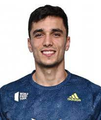
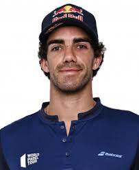
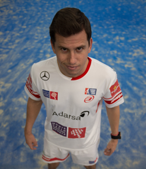
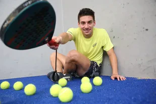
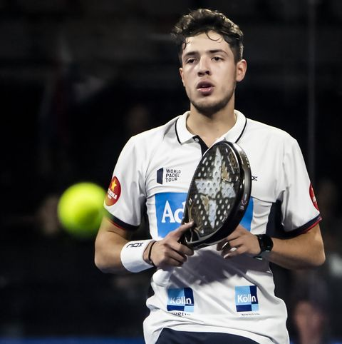
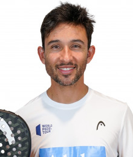

Alejandro Galán Romo, más conocido como Ale Galán,
(Madrid, 15 de mayo de 1996) es un jugador profesional de pádel español. En la actualidad ocupa el número uno en el ranking World Padel Tour.
La carrera deportiva de Alejandro Galán en el World Padel Tour comenzó después de unir fuerzas con Juan Cruz Belluati en 2016.
Con el que logró buenos resultados desde el principio, y logrando su explosión definitiva como pareja en 2017.
A pesar de su gran 2017, tras la separación de la pareja formada por Matias Díaz y Maxi Sánchez, Ale Galán se unió a Matías para la temporada 2018,
mientras que Belluati decidió formar pareja con Juan Lebrón.
Con Matías Díaz fueron unos habituales en semifinales en los primeros torneos de la temporada, logrando llegar a la final en el quinto torneo de la temporada, el Valladolid Open,
donde consiguieron vencer a la pareja formada por Maxi Sánchez y Sanyo Gutiérrez por 7-5, 3-6 y 6-3.
Galán logró así su primer título en World Padel Tour.
Cinco torneos después, en el Lugo Open, volvieron a repetir triunfo, después de imponerse por 6-0 y 6-4 a Luciano Capra y a Ramiro Moyano.
En 2019 comenzó la temporada junto a Juani Mieres con quien logró ganar el Máster de Argentina, el sexto torneo de la temporada,
después de que se tuviese que retirar por lesión Fernando Belasteguín y Pablo Lima.
A mitad de temporada, a partir del Open de Valencia, comenzó a jugar junto a Pablo Lima, con el que gana la final en Valencia.
A partir de 2020, Juan Lebrón Chincoa se convirtió en su nueva pareja deportiva.

Juan Lebrón Chincoa, más conocido como Juan Lebrón
(El Puerto de Santa María, 30 de enero de 1995), es un jugador profesional de pádel español que actualmente ocupa la 1ª posición en el ranking World Padel Tour.
En el comienzo de su carrera deportiva, Lebrón, destacó como junior, proclamándose varias veces campeón de España junior y disputando el campeonato del Mundo de la categoría.
En el World Padel Tour destacó desde el principio, llegando a jugar la temporada 2016 con Gabriel Reca con el que ascendió hasta el top 30 del ranking.
En 2017 comenzó la temporada con Marcello Jardim y la terminó con Adrián Allemandi.
Con ambos realizó buenas actuaciones y acabó la temporada en el 19º puesto
En 2018 comienza la temporada con Juan Cruz Belluati.
En el primer torneo de la temporada, el Catalunya Master, llegaron a su primera final como pareja tras batir en semifinales a la pareja nº 1 del ranking, la formada por Fernando Belasteguín y Pablo Lima.
En la final, Sanyo Gutiérrez y Maxi Sánchez no les dieron ninguna opción y cayeron por un 6-4 y 6-2.
En octubre de 2018 se conoció que Juan Lebrón y Belluati dejan de ser pareja. Juan Martín Díaz se convirtió en su nueva pareja deportiva hasta el final del 2018.
Su primer torneo fue el Granada Open, donde llegaron hasta semifinales.
En 2019, Paquito Navarro se convirtió en su nueva pareja deportiva.
En su primer torneo de la temporada, el Marbella Master, llegaron a la final, donde cayeron frente a los número 1 de 2018, Maxi Sánchez y Sanyo Gutiérrez por 6-1 y 7-6.
Sin embargo, esta derrota fue un anticipo de lo que lograron durante la temporada, en la que ganaron cinco torneos, en Alicante, Jaén, Valladolid, Bastad y São Paulo.
En este último, después de lograr la clasificación para la final, Juan Lebrón se convirtió en el primer número 1 de World Padel Tour nacido en España.
Paquito y Lebrón se aseguraron el número 1 al final de la temporada tras alcanzar la final en el Open de México, el penúltimo torneo de la temporada.
En la final perdieron contra Maxi Sánchez y Sanyo Gutiérrez por 7-6 y 6-2.
Pese a los buenos resultados, a partir de 2020, Alejandro Galán se convirtió en su nueva pareja deportiva.
El gaditano y el madrileño formaron una dupla muy difícil de vencer, lo que les llevó a alcanzar el número 1 en el ranking WPT tanto en 2020 como en 2021..

Francisco Jesús Navarro Compán, más conocido como Paquito Navarro,
(Sevilla, 10 de febrero de 1989), es un jugador de pádel profesional y actualmente es uno de los mejores mundo,
ya que ocupa la 2ª posición en el ranking World Padel Tour.
Paquito Navarro comenzó a jugar al pádel a los 5 años. A los 9 años empezó a disputar sus primeros torneos, llamando la atención de todo el mundo que observaba su juego.
A los 10 años se convirtió en subcampeón del mundo de su categoría junto a Jaime Bergareche.
Con 14 años volvió a jugar otro campeonato del mundo para jugadores de su edad, perdiendo de nuevo en la final.
El siguiente mundial lo disputó en categoría júnior con 16 años, disputando de nuevo la final y cayendo de nuevo en ésta.
Tras esto, comenzó a entrenar con Adrián Allemandi hasta los 20 años y consiguió romper su maleficio con las finales tras la consecución del Mundial Junior, el cual sería el último de Paquito.
En 2009 entró en circuito profesional Padel Pro Tour junto a Jordi Muñoz y ese mismo año se proclamó campeón de España sub-23.
En 2010 empezó el circuito junto a Pablo Cardozo y terminó junto a Pitu Losada.
En 2012 se consagró en circuito profesional junto a Adrián Allemandi donde llegó a dos finales y jugó el Máster Final.
En 2013, vuelve a jugar con Jordi Muñoz y en 2014 vuelve a jugar con Adrián Allemandi y también jugó con Maxi Grabiel, con quien ganó el Master de Valencia al ganar en la final a la pareja n.º 1, la formada por Fernando Belasteguín y Juan Martín Díaz.
En 2015, Matías Díaz se convierte en su nueva pareja, llegando a ser ambos la segunda pareja del circuito y realizando una gran temporada.
Sin embargo, en la temporada 2016, Paquito, decide cambiar de compañero y comienza dicha temporada junto a Sanyo Gutiérrez con el que llegó a las semifinales del primer torneo de la temporada.
En su segundo torneo, el Máster de Valencia, vencieron en semifinales a la pareja n.º 1 del ranking, conformada por Fernando Belasteguín y Pablo Lima.
En la final vencieron también a la pareja formada por Maxi Sánchez y Matías Díaz, logrando así el primer torneo de la temporada.
Paquito Navarro y Sanyo Gutiérrez lograron su segundo título de la temporada en La Nucía después de que no pudiera disputar la pareja n.º 1 la final, debido a la inoportuna lesión de Fernando Belasteguín.
Paquito y Sanyo Gutiérrez lograron el Máster Finals de Madrid al ganar en la final a la pareja formada por Juani Mieres y Miguel Lamperti por 6-3 y 6-4.
Paquito y Sanyo Gutiérrez acabaron así el año, como la segunda mejor pareja del circuito.
Paquito Navarro es el único jugador español que ha quedado Campeón de España en todas las categorías. Desde Benjamines hasta Absoluto.
En 2016 disputó el Mundial de padel, con la selección española. España fue subcampeona tras perder 2-1 la final ante Argentina.
Paquito jugó en su partido con Juan Martín Díaz, y ante los argentinos Fernando Belasteguín y Sanyo Gutiérrez, perdiendo el partido por 6-4, 3-6 y 7-5, e igualando así Argentina la eliminatoria a un punto.
En un nivel más personal, pero también ligado a su deporte, Paquito Navarro inaugura a principios del 2017 su canal de YouTube,
canal cuyo propósito es desentrañar los secretos de la estrella del Pádel a través de consejos y tutoriales, y también mostrar su lado más amigable a través de los retos, que pueden ser propuestos por los suscriptores del canal.
En 2017, Sanyo Gutiérrez, continuó siendo su pareja. En el primer torneo de la temporada, el Open de Santander, derrotaron a la pareja número 1, la formada por Fernando Belasteguín y Pablo Lima.
En el segundo torneo de la temporada, el Miami Open, vencieron en la final a la pareja formada por Fernando Belasteguín y Pablo Lima por 7-6 y 6-3.
Este resultado mostraba la amenaza que podían representar Paquito y Sanyo para los n.º 1, en una final que se iba repetir hasta la saciedad a lo largo de la temporada.
En los dos siguientes torneos de la temporada en La Coruña y Barcelona perdieron en la final contra Fernando Belasteguín y Pablo Lima.
En el quinto torneo de la temporada, el Valladolid Open, se llevaron la victoria tras la retirada antes de la final de los número 1 por una inoportuna lesión de Fernando Belasteguín.
En el octavo torneo de la temporada, el Alicante Open, llegaron a la final, cayendo derrotados frente a Fernando Belasteguín y Pablo Lima por 3-6, 6-3 y 3-6.
En el noveno torneo de la temporada 2017, Paquito y Sanyo Gutiérrez consiguen la victoria en la final del Open de Sevilla contra Fernando Belasteguín y Pablo Lima por 6-4 y 6-2, en una final en la que mostraron su mejor versión.
Sin embargo, en la final del Master de Portugal, Sanyo y Paquito perdieron frente a Bela y Lima por 6-2, 1-6 y 6-1.
En el Andorra Open lograron imponerse en la final a Fernando Belasteguín y Pablo Lima por 3-6, 6-4 y 6-4.
Sin embargo, en el torneo posterior, el Granada Open, cayeron derrotados por Bela y Lima por 7-6 y 6-1.
En el siguiente torneo, disputado en Zaragoza, no llegaron a la final, tras perder en semifinales.
En Buenos Aires volvieron a llegar a una final, en donde cayeron contra Fernando Belasteguín y Pablo Lima por 6-1 y 7-6.
Tras este torneo fue convocado con la selección española para la disputa del Europeo 2017 de pádel, logrando la victoria en su partido por 6-1 y 6-4, y teniendo como pareja deportiva a Juan Martín Díaz.
En el Keler Bilbao Open perdieron en semifinales ante Maxi Sánchez y Matías Díaz perdiendo todas las opciones de terminar como números 1 al final de 2017.
En 2018, Sanyo Gutiérrez deja de ser su pareja deportiva, jugando en esta temporada junto a Juan Martín Díaz.
En el primer torneo de la temporada, el Cataluña Master, solo pudieron llegar hasta cuartos de final.
Su primera final llegó en el tercer torneo de la temporada, el Zaragoza Open. En la final no pudieron batir a Maxi Sánchez y a Sanyo Gutiérrez, con los que perdieron por 6-4, 6-7 y 6-3.
Tres torneos después volvieron a alcanzar una final, en Bastad (Suecia), donde perdieron contra Fernando Belasteguín y Pablo Lima.
Durante la disputa de las semifinales del undécimo torneo del circuito, el Máster de Portugal, y con 5-5 en el marcador del segundo set, Paquito, chocó contra un cristal de la pista y éste se rompió provocándole heridas que le hicieron ser hospitalizado.
Juani Mieres y Miguel Lamperti, sus rivales en semifinales, pasaron así a la final del torneo.
Afortunadamente, tras ponerle puntos de sutura en rodillas y codos, recibió el alta médica en la mañana del día posterior.
Tras su ausencia en el Granada Open, y tras el anuncio por parte de Juan Martín Díaz de que la pareja con la que iba a jugar en Granada,
el gaditano Juan Lebrón, por ausencia del sevillano, iba a ser su nueva pareja deportiva hasta final de temporada, Paquito Navarro decidió aunar fuerzas con Pablo Lima,
ya que su pareja, el argentino Fernando Belasteguín, seguía lesionado, para los últimos torneos de la temporada, excepto el Máster de Argentina, donde ya estaba inscrito para jugar con Juan Martín.
En su primer torneo como pareja llegaron a la final del Euskadi Open, donde derrotaron a Miguel Lamperti y a Juani Mieres por 6-3 y 6-3, logrando así su primer título como pareja.
En Buenos Aires volvió a jugar con Juan Martín Díaz, con quien disputó las semifinales, donde perdieron ante Sanyo Gutiérrez y Maxi Sánchez.
Volvió a jugar con Pablo Lima en el Murcia Open, donde consiguieron llegar a la final, lugar donde cayeron derrotados frente a la pareja número 1 del 2018, la formada por Maxi Sánchez y Sanyo Gutiérrez.
Su pareja deportiva para el Master Final 2018 fue Juan Cruz Belluati, después de que Fernando Belasteguín se recuperase por completo de su lesión.
Para la temporada 2019, Juan Lebrón se convierte en el nuevo compañero de Paquito Navarro.
En su primer torneo de la temporada, el Marbella Master, llegaron a la final, donde cayeron frente a los número 1 de 2018, Maxi Sánchez y Sanyo Gutiérrez por 6-1 y 7-6.
Sin embargo, esta derrota fue un anticipo de lo que lograron durante la temporada, en la que ganaron cinco torneos, en Alicante, Jaén, Valladolid, Bastad y São Paulo.
En este último, después de lograr la clasificación para la final, Juan Lebrón se convirtió en el primer número 1 de World Padel Tour nacido en España.
Paquito y Lebrón se aseguraron el número 1 al final de la temporada tras alcanzar la final en el Open de México, el penúltimo torneo de la temporada.
En la final perdieron contra Maxi Sánchez y Sanyo Gutiérrez por 7-6 y 6-2.
En 2020, y pese la buena temporada realizada junto a Juan Lebrón, el brasileño Pablo Lima se convirtió en la nueva pareja deportiva de Paquito,
logrando ganar el primer torneo de la temporada, el Marbella Master, por 7-6, 2-6 y 6-3 frente a la pareja formada por Alejandro Galán y Juan Lebrón.
Para la temporada 2021, Martín Di Nenno se convirtió en su nueva pareja deportiva.
Junto a él llegó a la final del Vigo Open, del Málaga Open y del Sardegna Open, antes de lograr su primer título juntos en el Barcelona Master 2021, donde vencieron por 6-2, 3-6 y 6-4 a Juan Tello y a Federico Chingotto.
En el Córdoba Open 2021 ganaron su segundo título juntos, después de vencer por 6-3 y 6-3 a Alejandro Ruiz y a Franco Stupaczuk.
El 28 de noviembre, luego de alcanzar su séptima final consecutiva,
logran alzarse con el premio del Master de Buenos Aires tras batir en la final a la pareja de Sanyo Gutiérrez y Agustín Tapia por 6-4/6-2, conquistando así su tercer trofeo del año.

Martín Di Nenno
(Ezeiza, 18 de marzo de 1997) es un jugador profesional de pádel argentino que ocupa la 3° posición en el ranking World Padel Tour.
Su pareja deportiva actual es Paquito Navarro.
Martín Di Nenno comenzó a ser conocido en el mundo del pádel por sus buenos resultados junto a Franco Stupaczuk, con quién comenzó a escalar puestos en el ranking mundial.
Sin embargo, un accidente de tráfico en enero de 2016 le dejó sin jugar toda la temporada, por lo que Stupaczuk jugó esa temporada junto a Marcello Jardim.
En ese mismo accidente falleció un amigo suyo y la joven promesa del pádel argentino Elías Estrella.
Di Nenno regresó al circuito mundial en 2017 donde decidió elegir como nueva pareja a Lucas Campagnolo.
Sin embargo, a partir del Alicante Open comenzó a jugar junto a Juan Manuel Restivo.
En 2018 continuó jugando con Restivo, pasando inadvertidos durante la temporada en cuanto a buenos resultados. Su mejor resultado llegó en el Máster de Argentina donde llegaron a octavos de final.
En 2019 empieza a jugar con Javi Garrido, sin pasar de previa en las dos primeras pruebas consigue su mayor logro, alcanzando unas brillantes semifinales en el Alicante Open.
Además, consiguen alcanzar las semifinales del San Javier Challenger, así como dos cuartos de final en los torneos de Valencia y Sao Paulo.
En 2020 comienza la temporada junto a Agustín Gómez-Silingo.
Juntos, logran hacer dos semifinales, la primera en el Vuelve a Madrid Open 2020 y la segunda en el Sardegna Open 2020.
En octubre, la pareja formada por Maxi Sánchez y Mati Díaz se rompe, lo que desencadena la ruptura de Silingo y Di Nenno. Eso hace que la pareja de Martín para la recta final de la temporada sea Maxi Sánchez.
Juntos, logran hacer semifinales en el Alicante Open. Terminada la temporada regular dentro de las 8 primeras parejas del Ranking, la dupla formada por Di Nenno y Sánchez juega el Menorca Máster Final, donde Martín es debutante.
Contra todos los pronósticos y tras un partido dramático, Di Nenno y Sánchez logran derrotar a una de las parejas favoritas, Juan Tello y Fede Chingotto, lo que les otorga un pase a semifinales.
La demostración durante los años 2019 y 2020 de que Martín es una de las jóvenes promesas del pádel, le sirve para que en 2021 le llame uno de los mejores y más carismáticos jugadores del circuito, Paquito Navarro.
Juntos, llegan a la Final del Vigo Open 2021 y el 19 de septiembre consigue su primer título en el Estrella Damm Barcelona Pádel Master.
En el Córdoba Open 2021 ganaron su segundo título juntos, después de vencer por 6-3 y 6-3 a Alejandro Ruiz y a Franco Stupaczuk.

Agustín Tapia
(San Fernando del Valle de Catamarca, 24 de julio de 1999) es un jugador de pádel profesional argentino, que en la actualidad ocupa la 6ª plaza en el ranking World Padel Tour.
Agustín Tapia comenzó su carrera en el World Padel Tour en 2018, comenzando con Marcello Jardim como pareja deportiva.
En el Catalunya Master, disputado en marzo de ese año, ya comenzó a destacar, llegando ambos hasta los cuartos de final.
A mitad de la temporada 2019, Fernando Belasteguín se convirtió en su nueva pareja deportiva.
Juntos lograron el Madrid Master en septiembre de 2019, convirtiéndose en el primer título de Tapia, y con sólo 20 años de edad.
También llegaron a la final del Master Final, donde cayeron frente a Alejandro Galán y Pablo Lima.
En 2020 continuaron juntos, logrando ganar dos títulos, el Sardegna Open y el Master Final.
Pese a ello, y contra todo pronóstico, decidieron no continuar como pareja para la temporada 2021.
En 2021, Pablo Lima se convirtió en su nueva pareja deportiva y, pese a que lograron la victoria en Las Rozas Open y en el Málaga Open, en septiembre de 2021 decidieron separarse como pareja, después de haber disputado juntos el Lugo Open.
Pocos días después se confirmó que Sanyo Gutiérrez sería su nueva pareja para lo que restaba de temporada.
En el Swedish Open 2021 logró su primer título junto a Sanyo, después de vencer en la final a Paquito Navarro y Martín Di Nenno por 7-5 y 6-0.
Agustín Tapia es conocido como El Cosmonauta por la forma de mantenerse en el aire para terminar los puntos cerca de la red y como el Mozart de Catamarca por ser un personaje ilustre en su lugar natal.

Carlos Daniel Gutiérrez Amaya (San Luis, Argentina; 15 de junio de 1984), más conocido como Sanyo Gutiérrez,
es un jugador profesional de pádel argentino, cuyo compañero es Agustín Tapia. Ocupa la 5ta. posición en el ranking World Padel Tour.
Sanyo comenzó a jugar al pádel a los 11 años y a los 15 años entró en el circuito profesional. En 2006 decide mudarse a España para continuar su carrera.
A partir de 2007 llegó a algunos cuartos de final del circuito Padel Pro Tour junto a diferentes parejas.
En 2009, Sanyo, tiene como nueva pareja a Guillermo Lahoz con quien mejoraría su juego.
Después pasó tres años junto a Seba Nerone, y después formó tándem junto a Maxi Sánchez, amigo de la infancia, siendo una de las mejores parejas del circuito, y ganando dos Master Final.
En 2013, junto a Maxi Sánchez, se enfrentaron a la pareja nº 1 en la final del Master, logrando el triunfo, a pesar de perder por 1-6 el segundo set.
También ganaron otro torneo prestigioso, como el Open de Buenos Aires.
En 2014, siguiendo con Maxi Sánchez, ganaron el Master Final haciendo un partidazo frente a la pareja nº 1, la formada por Fernando Belasteguín y Juan Martín Díaz.
Durante 2015 formó pareja con Juani Mieres, con el cual obtuvo el Madrid Open.
En 2016, Paquito Navarro se convirtió en su nuevo compañero, llegando a semifinales en su primer torneo, en la ciudad española de Gijón.
En su segundo torneo, el Máster de Valencia, vencieron en semifinales a la pareja nº 1 del ranking, conformada por Fernando Belasteguín y Pablo Lima.
En la final vencieron también a la pareja formada por Maxi Sánchez y Matías Díaz, logrando así el primer torneo de la temporada.
Paquito Navarro y Sanyo Gutiérrez lograron su segundo título de la temporada en La Nucía (Alicante) después de que no pudiera disputar la pareja n.º 1 la final, debido a la inoportuna lesión de Fernando Belasteguín.
Junto a Paquito Navarro ha logrado ganar en 2016, el Masters Final de Madrid, derrotando en la final a la pareja formada por Miguel Lamperti y Juani Mieres por 6-3 y 6-4.
Ambos acabaron la temporada siendo la segunda mejor pareja, sólo superados por la formada por Fernando Belasteguín y Pablo Lima.
También en 2016 fue convocado por la Selección argentina de padel para disputar el Mundial de padel de 2016, que se jugó en Portugal.
Argentina se proclamó aquí campeona del mundo, y Sanyo ganó su partido, junto a Fernando Belasteguín, a la pareja española formada por Paquito Navarro y Juan Martín Díaz.
En 2017, su pareja continuó siendo Paquito Navarro y en el primer torneo de la temporada, el Open de Santander, vencieron en la final a la pareja número 1, la formada por Fernando Belasteguín y Pablo Lima.
En el segundo torneo vencieron a la pareja formada por Fernando Belasteguín y Pablo Lima por 7-6 y 6-3 y se llevaron el torneo.
En los dos siguientes torneos de la temporada en La Coruña y Barcelona perdieron en la final contra Fernando Belasteguín y Pablo Lima.
En el quinto torneo de la temporada, el Valladolid Open, se llevaron la victoria tras la retirada antes de la final de los número 1 por una inoportuna lesión de Fernando Belasteguín.
En el octavo torneo de la temporada, el Alicante Open, llegaron a la final, cayendo derrotados frente a Fernando Belasteguín y Pablo Lima por 3-6, 6-3 y 3-6.
En el noveno torneo de la temporada 2017, Paquito y Sanyo Gutiérrez consiguen la victoria en la final del Open de Sevilla contra Fernando Belasteguín y Pablo Lima por 6-4 y 6-2, en una final en la que mostraron su mejor versión.
Sin embargo, en la final del Master de Portugal, Sanyo y Paquito perdieron frente a Bela y Lima por 6-2, 1-6 y 6-1.
En el Andorra Open lograron imponerse en la final a Fernando Belasteguín y Pablo Lima por 3-6, 6-4 y 6-4.
Sin embargo, en el torneo posterior, el Granada Open, cayeron derrotados por Bela y Lima por 7-6 y 6-1.
En el siguiente torneo, disputado en Zaragoza, no llegaron a la final, tras perder en semifinales.
En Buenos Aires volvieron a llegar a una final, en donde cayeron contra Fernando Belasteguín y Pablo Lima por 6-1 y 7-6.
En el Keler Bilbao Open perdieron en semifinales ante Maxi Sánchez y Matías Díaz perdiendo todas las opciones de terminar como números 1 al final de 2017.
En 2018, Paquito Navarro deja de ser su pareja deportiva, volviendo a jugar con Maxi Sánchez después de tres años.
En su primer torneo juntos, el Catalunya Master, se hicieron con la victoria, tras derrotar en la final a Juan Cruz Belluati y a Juan Lebrón por 6-4 y 6-2.
En el tercer torneo de la temporada, el Zaragoza Open, lograron su segunda victoria de la temporada al derrotar en la final a Paquito Navarro y a Juan Martín Díaz por 6-4, 6-7 y 6-3.
Después lograron el Jaén Open y llegaron a la final en Valladolid donde perdieron con Alejandro Galán y Matías Díaz, lo que le acercó a muy pocos puntos del número 1.
Sin embargo, no pudo alcanzarlo tras perder en la final del Valencia Open contra Fernando Belasteguín y Pablo Lima, que salvaron así el primer puesto.
Después de que no llegasen a la final del Open Internacional de Bastad, lograron la victoria en el Mijas Open tras vencer en la final a Juan Lebrón y a Juan Cruz Belluati.
Después ganaron el Andorra Open, encadenando así dos torneos ganados de forma consecutiva.
Tras lograr el sexto torneo en el Máster de Portugal, después de vencer a Miguel Lamperti y Juani Mieres por 7-6 y 7-5, Maxi Sánchez se colocó como número 1 del ranking, desbancando así a Pablo Lima de la primera plaza del World Padel Tour.
Sanyo también escaló puestos y se situó en la segunda plaza, a escasos puntos de Maxi.
Ambos terminaron la temporada como la pareja N.º 1 del World Padel Tour, siendo la primera pareja en 16 años en destronar el reinado de 16 años logrado por Fernando Belasteguín (primero junto a Juan Martín Díaz y luego con Pablo Lima).
En 2019, Sanyo y Maxi Sánchez siguieron juntos, logrando ganar 5 torneos y llegar a otras 2 finales. Esto no le alcanzó para seguir como los N.º 1 del mundo, siendo superados por la dupla de Paquito Navarro y Juan Lebrón.
La pareja terminó como la N.º 2 del planeta pádel.
Sanyo y Maxi Sánchez separaron camino nuevamente en 2020. Sanyo jugó esta temporada junto al talentoso argentino Franco Stupaczuk.
Pese a las altísimas aspiraciones de la pareja, no lograron quebrar el implacable ritmo de los N.º 1 de la temporada: Alejandro Galán y Juan Lebrón.
Lograron alzarse con el título en Menorca y alcanzar la final en Barcelona y Alicante, posicionándose 6.os en el ranking mundial.
En 2021, Sanyo unió fuerzas con Fernando Belasteguín, con quien ya compartió equipo en la selección argentina.
En el primer torneo de la temporada, el Madrid Open, se alzaron con el título, después de lograr la victoria en la final por 6-7, 6-4 y 6-3 frente a Alejandro Ruíz y Franco Stupaczuk.